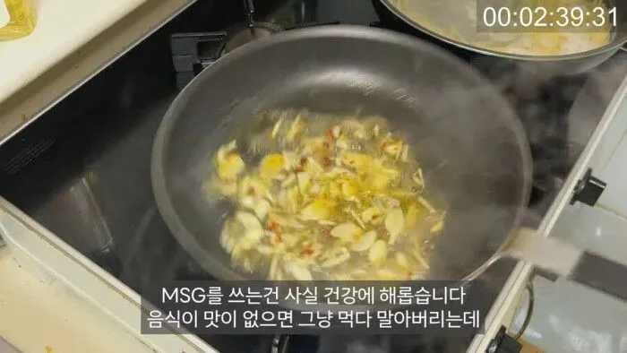
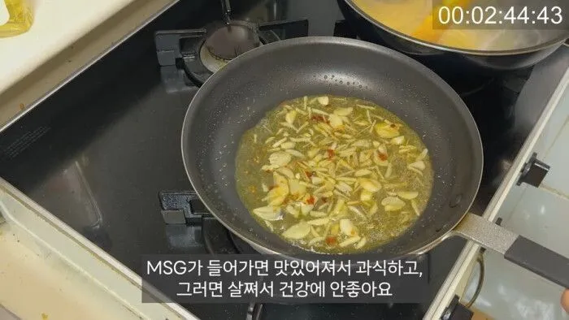

MSG가 들어가줘야 음식이 먹을만해지던데 ㅎㅎㅎ


MSG가 들어가줘야 음식이 먹을만해지던데 ㅎㅎㅎ
ㅇㅇ 단백질임 ㅋㅋ 감칠밋낼려거 할때 넣는거나 국물우리는거 재료 보면 다 단백질임 ㅋㅋㅋ
음모론자들은 그런거 안믿어
단백질 덕에 탄수화물 당류 섬유질 덩어리를 더 먁었쥬?
정확히는 단백질의 기본 단위인 아미노산
우리가 아는 단백질은 아님. 신체에는 불필요함.
인체 내에서 신경전달, 에너지 대사, 단백질 합성, 항산화 시스템에 다 쓰이는게
글루탐산임
그 합성 일반단백질로 다 돼서 일반적으로 오히려 과다하고 신경계 교란시키는게 조미료임.
실제로 노인네들 심혈관질환 있으면 먹지말라고 함
사람이 맛있다고 느끼는거 = 보통 생존에 필수적으로 필요한거
보통 그렇게 진화해온거임
단백질의 상징으로서 그렇게 느끼는거지.
감칠맛은 고단백 고미네랄 음식의 상징이기도 함.
그래서 위고비랑 msg랑 뜨면 누가이김?
반박할 수.. 없구만
맛있는건 정말 참을수 없어ㅓ~
맞긴함..
알리오올리오에 MSG 반드시 넣어야지..
맞아 한그릇먹을거 msg넣으면 두세그릇 먹더라
Msg vs 마운자로 뱃살이 웅장해지는 싸움…!
저런 이유면 납득이라도 하지
단백질이라던데